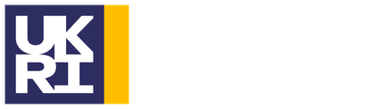

Mon 23 Nov · 09:00–17:00
Visit programme
A visit programme for international delegates.
BEYOND is the creative industries conference for research, innovation and business, held at MediaCity in Salford. USx is gathering University of Salford student interest now, so we can tell you about roles and places as they are confirmed.
A visit programme for international delegates.
Screen, XR and immersive media, AI and creative practice, gaming, VFX, live performance and music.
CreaTech, capital and funding models, creative clusters, IP and copyright, and global markets.
Professor and Chair of Science Communication & Future Media, University of Salford
The conference site lists no student-specific pricing. Ask us on the sign-up form if you need help choosing.
We're looking for students who can shoot, speak, edit and share, all on a mobile phone. Volunteering roles are not part of this opportunity. You'll capture the conference on your phone, create short content for social channels, and share it on the day.
Students from any course are welcome, including media, journalism, design, film, games, music and science communication. You don't need prior experience. Tell us what you can do on the sign-up form, and which days and sessions you're available for.
The programme includes speakers from the creative industries, research and government, from organisations such as Aardman, Ars Electronica, Arup, the British Council, Creative UK, The Design Council and Merlin Entertainments.


Festival partnerTell us who you are and what interests you. We'll contact you with roles, times and any student places once they are confirmed.
Volunteering, festivals, media and research opportunities for University of Salford students, posted as soon as they open.
Follow the channel